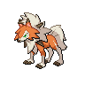

Lycanroc-Dusk appears on 17 of 1660 Pokémon Champions VGC tournament teams in the backtwo archive (1% usage, Reg M-B and Reg M-A). The most common item is Focus Sash (94% of Lycanroc-Dusk sets) and the most common ability is Tough Claws. Its most frequent teammate is Kingambit (71% of its teams).
Open Lycanroc-Dusk in the full app →| Team | Player | Event | Result | Reg | Date |
|---|---|---|---|---|---|
| DjSanders' Froslass Dragonite Team | DjSanders | - | — | M-A | 12 Jun 2026 |
| Lorenzo Profeta's Turin SPE 2026 Top 8 Team | Lorenzo Profeta | Turin SPE 2026 | 5th | M-A | 7 Jun 2026 |
| Ghiso's Turin SPE 2026 Top 8 Team | Matteo Ghisini | Turin SPE 2026 | 6th | M-A | 7 Jun 2026 |
| Mava's Turin SPE 2026 Top 16 Team | Matteo Ballini | Turin SPE 2026 | 10th | M-A | 7 Jun 2026 |
| David Gidov's VR June Challenge Runner Up Team | David Gidov | VR June Challenge | Runner Up | M-A | 7 Jun 2026 |
| Panda's Recreation of Dorian's Lycanroc-Dusk Team | Justin Tang | Video | — | M-A | 29 May 2026 |
| TrueBurna & thepostmanp's Froslass Dragonite Team | TrueBurna & thepostmanp | - | — | M-B | 17 Jul 2026 |
| Twilite's Grand Champions Festival Encore Top 128 Team | Kshaunish Shaik | Grand Champions Festival Encore | 72nd | M-B | 13 Jul 2026 |
| Itachi's Floette Blastoise Team | Itachi | - | — | M-B | 9 Jul 2026 |
| Chandy's Ranked Season M-3 105th Place Team | Kohei Sakurai | Ranked Season M-3 | 105th | M-B | 8 Jul 2026 |
| ykoooow's Ranked Season M-3 142nd Place Team | ykoooow | Ranked Season M-3 | 142nd | M-B | 8 Jul 2026 |
| greyfox302's Mawile HTR Team | greyfox302 | - | — | M-B | 5 Jul 2026 |
Showing 12 of 17 teams. See all 17 in the full app →
Already running Lycanroc-Dusk and want the rest of the six? The team finder takes the Pokémon you have and ranks every tournament team by how many of your picks it matches. Or run the numbers in the damage calculator — Champions-accurate, with Mega Evolution, Stat Points, weather, terrain and spread reduction.